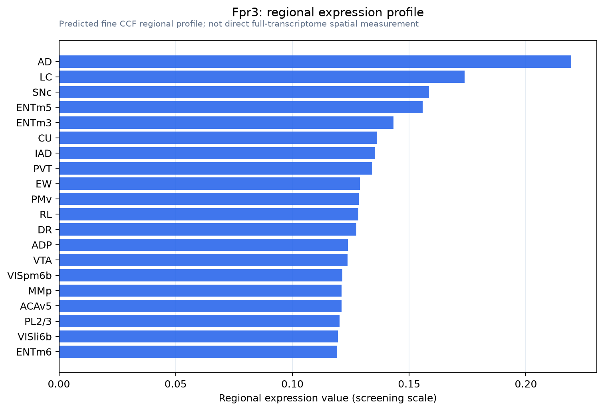

Fpr3
Formyl peptide receptor-related sequence 1 (FMLP-related receptor I) (FMLP-R-I) (Formyl peptide receptor related sequence 1) (Formyl peptide receptor-like 1) (Lipoxin A4 receptor) (LXA4 receptor) (N-f
Spatial tier: RESTRICTED · Class: GPCR · Top region: AD (Anterodorsal nucleus) · Positive regions: 14/554
43.0Discovery Score
33.8Targetability Score
CEvidence grade C
What this means: Fpr3: fine CCF profile is restricted toward AD (top regions: AD, LC, SNc, ENTm5, ENTm3; 14 positive regions); direct spatial validation is still required.
Function in AD: evidence, prediction, innovation
- Gene function
- Fpr3 (Fpr-rs1) encodes a formyl peptide receptor, a Gi-coupled GPCR related to the chemoattractant receptors that detect bacterial N-formylated peptides. In mouse it is expressed by subsets of vomeronasal sensory neurons, bone-marrow cells and neutrophils and is upregulated by lipopolysaccharide; bacterial MgrB is a validated agonist.
- Region function
- The anterodorsal thalamic nucleus carries the head-direction signal from vestibular nuclei to parahippocampal cortex, underpinning spatial orientation and navigation.
- Published in this region
- none No region-specific literature found. Fpr3 protein has been mapped to vomeronasal sensory neurons and immune cells (Stempel et al. 2016), where bacterial MgrB peptide activates it and drives avoidance behaviour (Bufe et al. 2019), with no CNS neuronal expression reported.
- Predicted function
- Prediction: an Fpr3-positive AD population would most plausibly provide Gi-coupled inhibition damping head-direction firing during systemic infection, a route by which sickness degrades spatial orientation; alternatively the signal reflects perivascular immune cells. First test: anti-Fpr3 immunostaining with neuronal markers; MgrB should suppress AD firing if neuronal Fpr3 is real. Strain background matters, since many inbred strains carry a non-functional allele.
- Innovation
- ★★★★☆ 4/5 A pathogen-sensing GPCR in the head-direction thalamus would be genuinely novel, and antibodies plus natural knockout strains make it cheap to test.
- Tools
- validated anti-Fpr3 antibodies (Stempel et al. 2016); natural knockout strains carrying the Fpr3 delta424-435 allele as controls; MgrB peptide agonist; antagonists Boc-MLF and WRW4 for related Fprs.
- References
Direct evidence located at the region
No Allen ISH section could be located at this region's centroid for the recorded experiments.
Look it up yourself: Allen Mouse Brain ISH for Fpr3Allen reference atlas: AD (structure 64)ABC Atlas MERFISH viewer(in the ABC Atlas choose dataset MERFISH-C57BL6J-638850-CCF, colour cells by gene "Fpr3" or by parcellation_substructure "AD")All genes confined to AD + 3-D brain
Direct spatial evidence
MERFISH REGION LOCATOR

Regional expression figure

Predicted WMB × fine-CCF profile; not direct full-transcriptome spatial measurement.
Spatial profile
Evidence and specificity
- Evidence status
- PREDICTED_FINE
- Direct sources
- None; predicted localization only
- Exclusive threshold
- 12 positive regions out of 554
- Spatial specificity
- 0.302
- Top-region fraction
- 0.073
- Filter status
- PASS
Interpretation limits
- Cell-type-to-region projection is imputed expression, not direct spatial measurement.
- Adult reference atlases do not establish stability across age, sex, strain, state, or disease.
- Transcript abundance does not guarantee protein abundance or genetic-tool performance.